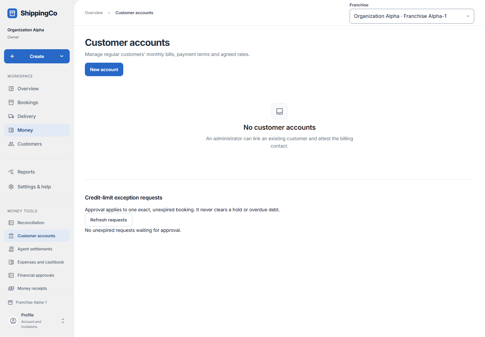
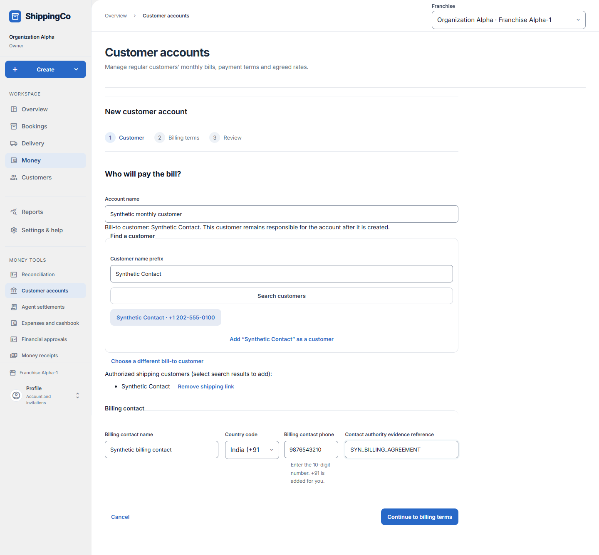
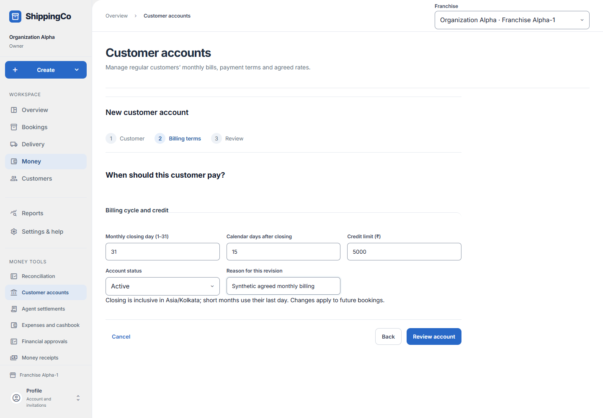
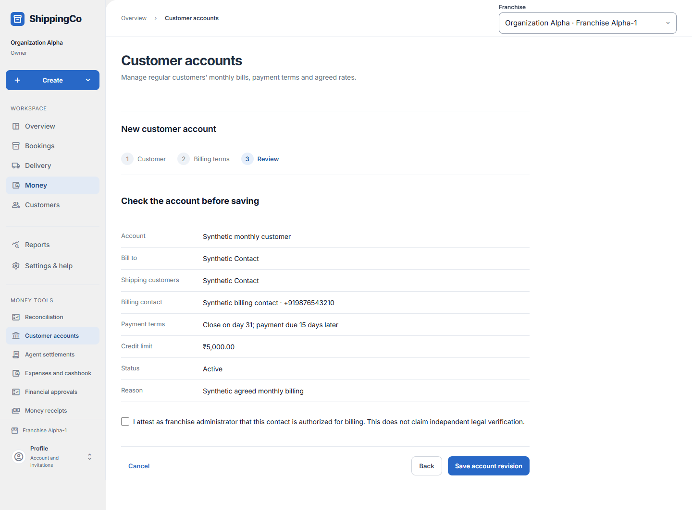

Customer accounts
What this helps you do
- Set monthly billing terms, authorised shipping customers and agreed prices for a regular customer.
Open this feature
- Money > Customer accounts.
- Check the active branch first. Available actions depend on your role and the selected record.




Step 1 — customer and billing contact
- Select New account, or open a saved account and choose Revise terms, links or hold.
- Enter Account name. Search using at least three characters of the customer name and select the correct result. The first chosen customer is responsible for the bill. Add authorised shipping customers from the results; remove any incorrect shipping link.
- For a new customer, use Add as a customer in the search. The searched name becomes the new customer name. Enter New customer phone; New customer address is optional. Select Save customer and select to continue in the account form.
- Complete billing contact name, phone with country code, and real authority evidence reference. Select Continue to billing terms.
Step 2 — billing terms
- Enter closing day 1–31, calendar days after closing 0–366, credit limit in rupees, Active or Held, and a revision reason of 3–256 characters.
- A short month closes on its last day. Revised terms affect future bookings, not terms already frozen on bookings. Select Review account.
Step 3 — review and save
- Check bill-to customer, shipping customers, contact, payment terms, credit limit, status and reason. Use Back to correct the draft.
- Confirm the billing-contact authority attestation, then Save account revision. The bill-to customer cannot be changed after creation.
Rates, statements and credit exceptions
- Open the account to inspect revision history, monthly statements and negotiated rates. Load more records when needed.
- Rate rules use destination, service, inclusive minimum grams and exclusive maximum grams; a blank maximum means unlimited. Enter freight and packing in rupees, effective start/end in Kolkata and the real approval reference. Load remaining versions if requested before Publish rate version.
- Review an unexpired credit request and enter an approval reason before Approve this booking only. This does not remove an account hold or clear overdue bills.
Fields and when to use them
These fields belong to the actions above. Complete the fields for your selected action; optional filters may stay blank.
- Customer name prefix: The first part of the existing customer name. Enter at least three characters to search. Use when shown for the selected action.
- Account name: A short name you recognise for this billing account. Required when this field is shown.
- Billing contact name: The person who handles the customer’s bills. Required when this field is shown.
- Billing contact phone: That person’s phone number, including the country code, such as +91. Required when this field is shown.
- Contact authority evidence reference: A real record showing that this person may handle billing. Do not invent proof. Required when this field is shown.
- Monthly closing day (1–31): The day each month when the billing period closes. A short month uses its last day. Required when this field is shown.
- Calendar days after closing: How many days after closing the customer has to pay. Enter 0 to 366. Required when this field is shown.
- Credit limit (₹): The maximum credit allowed for this account, in rupees. Required when this field is shown.
- Account status: Active permits normal use. Held stops normal use of the credit account. Use when shown for the selected action.
- Reason for this revision: Explain why you are making this request or change. Use the real business reason. Required when this field is shown.
- Effective from (Asia/Kolkata): Enter the effective from (asia/kolkata) for this action, using the time zone shown. Required when this field is shown.
- Effective until (Asia/Kolkata): Enter the effective until (asia/kolkata) for this action, using the time zone shown. Required when this field is shown.
- Rate approval reference: Use the reference from the matching saved record or real supporting document. Do not invent one. Required when this field is shown.
- Service: Select the service appropriate to the action explained above. Use when shown for the selected action.
- Credit exception approval reason: Explain why you are making this request or change. Use the real business reason. Required when this field is shown.
- Shipping customers: Existing customers allowed to use this billing account. At least one
- Contact authorisation confirmation: Confirm that the billing contact is authorised. Required
- Destination / minimum and maximum weight / freight / packing: Each negotiated rate row defines a destination, weight range and price. Weight is grams; money is rupees in the editor. When publishing negotiated rates
If you need to retry
- No records: check branch, account or customer and filters. Use Load more where offered before deciding a record is missing.
- Invalid or missing value: read the form message, correct the draft, then review amounts and references again.
- Uncertain save: use the offered retry for the same request. Do not create a second payment, return, expense or application to guess whether the first saved.
- Changed evidence or policy: refresh current records and review them before a new request. A saved report retains its captured figures; create another report for current results.
About this guide
Checked against the current screen code on 1 November 2026. This explains app behaviour, not tax or accounting advice. Buttons and records can differ by role.